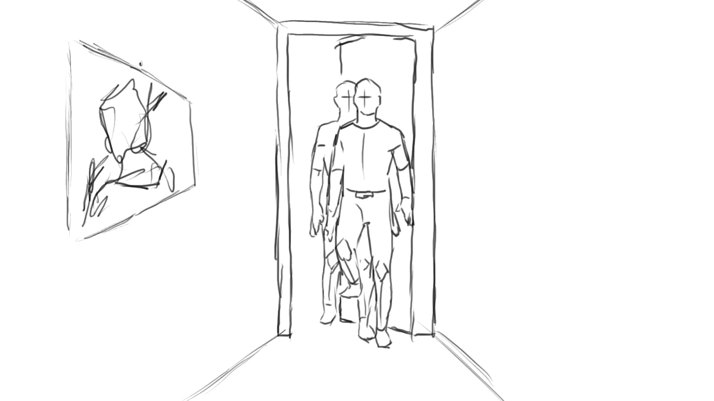
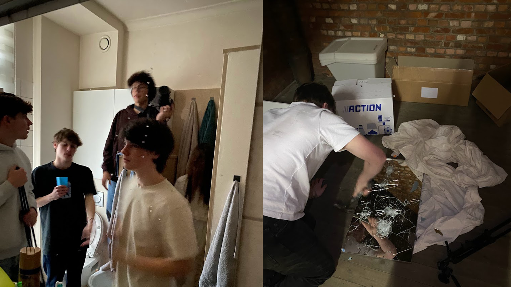

Kort film Claire
Kort film
In mijn laatste jaar van de middelbare school kreeg mijn klas de opdracht om een
kortfilmfestival te
organiseren. We werden in groepen verdeeld en elke groep moest een kortfilm maken, die aan
het einde
van het project aan een publiek werd gepresenteerd.
Het thema dat onze groep koos was horror, en
uiteindelijk besloten we onze film Claire te noemen. Het was een uitdagend en creatief
proces
waarbij iedereen zijn of haar steentje moest bijdragen.
Om onze kortfilm te maken, moesten we het volledige proces doorlopen zoals dat ook in de
echte
filmindustrie gebeurt. Dit betekende dat we een filmscenario moesten schrijven, een
pitchline
bedenken, toestemming regelen voor locaties, en een storyboard maken. Elk teamlid had een
specifieke
taak, en door samen te werken wisten we alle voorbereidingen op tijd af te ronden.
Toen alles geregeld was, konden we beginnen met filmen. Voor het filmen kregen we precies
één week
de tijd. Tijdens deze week was het een race tegen de klok om alle scènes goed op te nemen.
Af en toe
kwam een leerkracht langs om te controleren hoe het proces verliep en om feedback te geven.
Ondanks
wat stress en onverwachte uitdagingen lukte het ons om alles binnen de deadline op te nemen.
Na de draaidagen begon de volgende fase: het monteren van de film. We werkten hard aan de
bewerking,
het toevoegen van geluidseffecten en muziek, en het perfectioneren van de beelden.
Tegelijkertijd
werkten we aan de promotie van onze film door een trailer en een poster te maken. Het was
inspirerend om te zien hoe ons harde werk langzaam tot leven kwam.
Tijdens het kortfilmfestival werden alle films getoond aan een groot publiek, en het was
spannend om
te zien hoe ons werk werd ontvangen. Na de vertoningen vond de prijsuitreiking plaats,
waarbij
prijzen werden uitgereikt in verschillende categorieën. Hoewel we slechts één prijs wonnen,
was het
wel de meest bijzondere: de publieksprijs. Het was een geweldig moment dat onze harde werk
en
toewijding beloond werden door het enthousiasme van het publiek.
Dit project was een unieke ervaring die me veel heeft geleerd over samenwerken, creativiteit
en het
doorlopen van een volledig productieproces. Het was zonder twijfel een hoogtepunt van mijn
laatste
schooljaar.
Wat ik heb gedaan voor het project is de storyboard gemaakt me geholpen aan het scenario en
bij de
trailer de outro en de poster voor de kort film gemaakt.
Project tijdlijn
All cards must be the same height and width for space calculations on large screens.
Permissie en Pitchline
Permissie:
De film draait om een groep jongeren die samenkomen in een huis en per
ongeluk een geest
oproepen. Vanaf dat moment worden ze op angstaanjagende wijze achtervolgd en
gestalkt door
deze bovennatuurlijke aanwezigheid.
Pitchline:
"Een oproep naar het bovennatuurlijke die eindigt in een onontkoombaar spel
van angst."
Synopsis
Een groep jongeren brengt een avond door in een oud, afgelegen huis met een
duistere
geschiedenis. Tijdens een seance met een oude spiegel roepen ze per ongeluk
een
wraakzuchtige geest op. Wat begint als een onschuldig experiment, verandert
in een
nachtmerrie vol angstaanjagende gebeurtenissen. Terwijl ze een voor een
verdwijnen,
ontdekken de overlevenden duistere geheimen over het huis en de geest.
Kunnen ze ontsnappen,
of worden ze opgeslokt door de schaduwen van het verleden? "Reflecties van
de Geest" is een
huiveringwekkende reis door het bovennatuurlijke.
filmscenario
FADE IN
1. INT. BANE’S WOONKAMER
We zien een mooie shot van Bane zijn woonkamer met op de muur een oude foto
van het huis.
(De camera begint naar het de foto te gaan en zoomt in naar de foto. Er komt
een transitie )
2. EXT. BUITEN BANE’S HUIS
De camera blijft op dezelfde plek als in de foto. Op een koude herfstavond
arriveert Max
(18) met de auto en stapt uit. Jay (17) en Chris (17) komen elk van een
andere kant
aanlopen, Jay met een zak drank. Samen lopen ze naar de voordeur, bellen
aan, en worden door
Bane verwelkomd en binnengelaten.
storyboard
Hier is een van de plaatjes te zien van de storyboard die ik toen gemaakt heb.
Opnames
Tijdens de opnames hebben we op een paar verschillende locaties gefilmd.
Trailer
Hier is de trailer te zien die we hebben gemaakt voor onze kortfilm